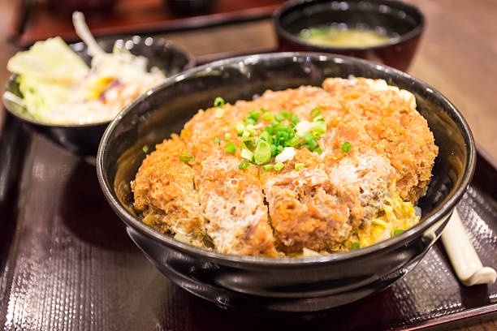

Katsudon is a delicious Japanese meal and is one of Kai's favorite meals! It is a super easy meal to make and super yummy! First, cook some rice up. Then cook some breaded meat, most Katsudon dishes are made with chicken or pork. Crack an egg over the meat and cook the egg over/around the meat. Cook some onions and some other veggies that you'd like in the dish. Put some rice in a bowl and plop all that good stuff on top of that rice. Wallah. Donezo.